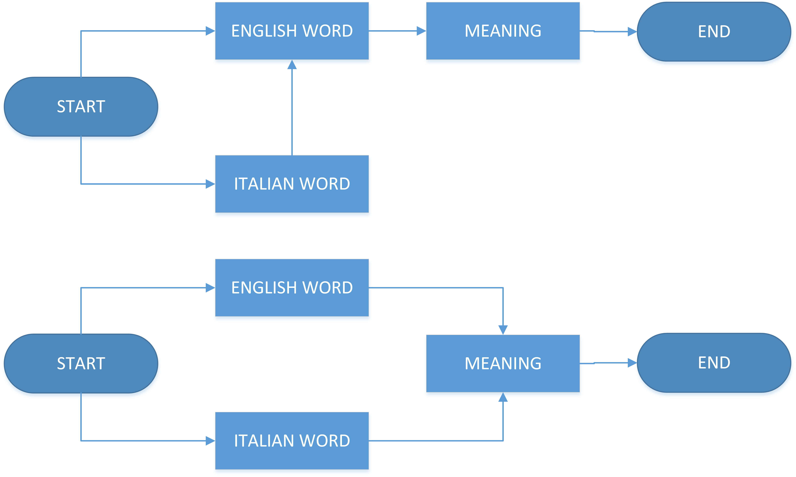

Fish's Personal Website |
|||||
|
|||||
Language ProcessingCreated : 2020-12-28 | Author : Fish | State : In Progress One of many difficult things to learn the older you're is languange, I'm not going to explain why because it's entirely outside my understanding. Personally I'm fluent in three language having two native and one foreign, all of which are learned in my youth. in this article I'm going to write my thoughts on this subject, especially the way the brain process language. To make it easy English is going to be our primary language, and italian for the foreign languange in this article.  When something is spoken in English optimally you instantly understand the meaning, but in the case of foreign languange, if you're not yet fluent in it, firstly your brain will have to translate it to English to find the meaning of that word, if that fails you won't understand it. When you're already fluent in both English and Italian, Seemingly you would instantly understand the meaning without having to translate it to English first. The same process also applicable to foreign alphabet, it would have to go to roman alphabet first to translate it. That's all I currently have in mind, if another thing comes up I will continue. |
|||||
| © Fish 2020 |